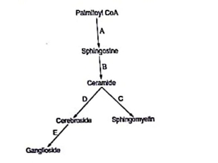
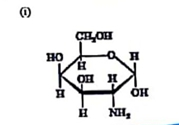
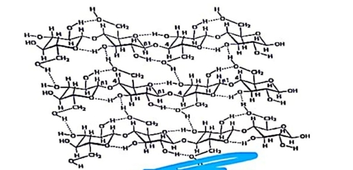
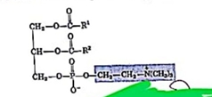
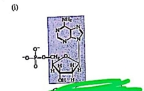
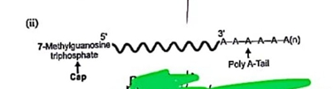

a) 1. D-Ribose: Structural component of RNA and nucleotide coenzymes (ATP, NAD⁺).
2. D-Deoxyribose: Structural backbone of DNA.
3. D-Ribulose: Intermediate in the Pentose Phosphate Pathway (PPP).
4. D-Xylulose: Intermediate in the uronic acid pathway and PPP.
b) Furfural (or 2-furaldehyde).
c) It is used for the qualitative and quantitative estimation of pentoses in solutions using colorimetric tests, such as Bial's Test (which forms a blue-green complex).
d) 1. Sucrose: Glucose + Fructose
2. Lactose: Glucose + Galactose
3. Maltose: Glucose + Glucose
e) 1. Sucrose + 1N HCl: Yields an equimolar mixture of D-glucose and D-fructose (invert sugar).
2. Starch + 1N HCl: Complete hydrolysis ultimately yields D-glucose units.
f) Concentrated mineral acids cause rapid dehydration of monosaccharides, removing water molecules to form furfural derivatives (furfural from pentoses, and 5-hydroxymethylfurfural from hexoses).
a) Epimers: They are diastereomers that differ in configuration around only one specific chiral center. D-glucose and D-mannose specifically differ in the orientation of the hydroxyl group (-OH) at the C-2 position.
b) Anomers: They are cyclic monosaccharide isomers that differ in configuration only at the hemiacetal/carbonyl carbon (C-1). α-D-glucose has the -OH group at C-1 pointing downwards (trans to C-6), while β-D-glucose has the -OH pointing upwards (cis to C-6).
c) Aldose-ketose pair: They are functional isomers. D-ribose is an aldopentose containing an aldehyde functional group (-CHO) at C-1, whereas D-ribulose is a ketopentose containing a ketone functional group (-C=O) at C-2.
d) Comparison of α-D-glucose and β-D-glucose (Haworth structures): Both feature a six-membered pyranose ring with identical substituents at C-2, C-3, C-4, and C-5. The difference lies strictly at C-1 (the anomeric carbon), where α-D-glucose has the hydroxyl group projected downwards, and β-D-glucose features the hydroxyl group projected upwards.
a) Atherosclerosis (or Hypercholesterolemia / Carotid Artery Stenosis).
b) 1. Hypertension
2. Hyperlipidemia/High LDL levels
3. Advanced age (60 years old)
4. Sedentary lifestyle, obesity, smoking, or family history of cardiovascular disease.
c) Less than 200 mg/dL.
d) LDL primarily functions to transport cholesterol from the liver to the peripheral tissues for cellular usage (e.g., membrane synthesis, steroidogenesis).
e) LDL consists of roughly 75-80% lipids and 20-25% proteins. The lipid component is predominantly cholesteryl esters and free cholesterol inside a phospholipid monolayer. The primary protein component is Apolipoprotein B-100 (ApoB-100).
f) It is termed "bad cholesterol" because excess circulating LDL can penetrate the arterial endothelial wall, become oxidized, and trigger plaque formation (atherogenesis), leading to vessel occlusion.
g) The elevated LDL became oxidized and trapped in the subendothelial space of the right carotid artery, stimulating foam cell formation and resulting in an atherosclerotic plaque that narrowed the arterial lumen.
h) High-Density Lipoprotein (HDL).
i) Lipoproteins are water-soluble complexes designed to transport hydrophobic lipids through aqueous plasma (protein content is structural and on the shell). Proteolipids are hydrophobic, insoluble in water, typically found in cellular membranes (like myelin sheath), where lipid molecules are covalently attached to the protein structure.

a) The accumulating substance is Sphingomyelin (produced in Step C). The deficient enzyme is Sphingomyelinase.
b) The accumulating substance is Ceramide (produced in Step B). The deficient enzyme is Ceramidase.
c) The accumulating substance is Galactocerebroside (a type of Cerebroside produced in Step D). The deficient enzyme is Galactocerebrosidase (β-galactosidase).
d) The accumulating substance is GM2 Ganglioside (produced via downstream processing in Step E). The deficient enzyme is Hexosaminidase A.
e) The accumulating substance is Globotriaosylceramide (Gb3) (part of the neutral glycosphingolipid/oligosaccharide chain branching in Step D/E). The deficient enzyme is α-Galactosidase A.
(a) A nucleic acid is a biopolymer composed of nucleotide monomers, which store and transmit genetic information. There are two main types found in living cells: Deoxyribonucleic Acid (DNA) and Ribonucleic Acid (RNA).
(b) Complete chemical hydrolysis of a nucleic acid yields three fundamental components:
1. Pentose sugars (D-ribose or D-2-deoxyribose)
2. Nitrogenous bases (Purines: Adenine, Guanine; Pyrimidines: Cytosine, Thymine, or Uracil)
3. Inorganic phosphoric acid ($H_3PO_4$).
(c) Heat treatment denatures double-stranded nucleic acids by breaking hydrogen bonds between complementary bases, separating them into single strands. Alkali treatment causes selective degradation: RNA is hydrolyzed into ribonucleotides due to its vulnerable 2'-OH group on the ribose ring, whereas DNA remains chemically stable but fully denatured into single strands. Together, these treatments help separate, degrade contaminating molecules (like proteins or RNA), and isolate pure genomic DNA.
(d) The molecule of interest to determine the inherited genetic basis of $\alpha$-thalassemia is Genomic DNA (specifically the $\alpha$-globin gene cluster located on chromosome 16).
(e) $\alpha$-thalassemia is an inherited autosomal codominant disorder caused by mutations or deletions within the $\alpha$-globin gene cluster. Isolating the genomic DNA allows investigators to directly look at the baseline hereditary blueprint (the genotype) to identify these deletions, rather than looking at transient or downstream protein expression.
(f) Four unique structural features of DNA (compared to RNA) include:
1. Contains 2'-deoxy-D-ribose sugar (lacks an -OH group at the C-2 position).
2. Employs the pyrimidine base Thymine instead of Uracil.
3. Exists stably as a double-stranded helix stabilized by Watson-Crick base pairing.
4. Highly resistant to alkaline hydrolysis due to the absence of the neighboring 2'-hydroxyl group.
(g)
* DNA: Serves as the permanent repository of genetic information, ensuring its faithful storage and transmission across generations.
* RNA (mRNA, tRNA, rRNA): Directly participates in protein synthesis. mRNA carries the genetic code from DNA, tRNA delivers specific amino acids, and rRNA forms the catalytic structural core of ribosomes.
(h) No. The entire genome does not need to be comprehensively sequenced or analyzed. Instead, targeted genetic analysis (such as PCR, multiplex ligation-dependent probe amplification (MLPA), or selective gene sequencing) is focused specifically on the $\alpha$-globin gene cluster located on chromosome 16 to check for specific gene deletions.
(i) The sequence follows the Central Dogma of Molecular Biology:
$$\text{DNA} \xrightarrow{\text{Replication}} \text{DNA} \xrightarrow{\text{Transcription}} \text{mRNA} \xrightarrow{\text{Translation}} \text{Protein}$$


(a)
* Open Chain (Fischer): An aldohexose chain where C1 is -CHO, C2-OH is right, C3-OH is left, C4-OH is right, C5-OH is right, and C6 is -CH₂OH.
* Ring Form (Fischer): An intramolecular hemiacetal link between C1 and C5, projecting the anomeric -OH right (α) or left (β).
* Haworth Projection: A six-membered pyranose ring where α-D-glucose has the C1 -OH pointing down, and β-D-glucose has the C1 -OH pointing up.
(b) Glucose has 4 chiral carbons, so it has $2^4 = 16$ stereoisomers (8 D-configuration and 8 L-configuration sugars). Three of the most common isomers are D-Galactose, D-Mannose, and D-Fructose.
(c)
* Structure (i): D-Glucosamine (2-Amino-2-deoxy-D-glucose).
* Structure (ii): Glycogen (or Amylopectin), displaying $\alpha(1\rightarrow4)$ glycosidic bonds in the main chain and $\alpha(1\rightarrow6)$ bonds at branching points.



(d) Nitric acid ($HNO_3$) has a planar structure consisting of a central nitrogen atom covalently bonded to three oxygen atoms, one of which is protonated via a hydroxyl group ($-\text{OH}$), with resonance delocalization across the other two terminal oxygens.
(e) Fats contain predominantly saturated fatty acids with straight hydrocarbon chains that pack tightly together, maximizing van der Waals interactions and elevating the melting point above room temperature. Oils contain unsaturated fatty acids with one or more cis double bonds, which introduce sharp kinks in the chains. This prevents tight packing, weakening intermolecular forces and keeping them liquid at room temperature.
(f) Essential fatty acids (like linoleic and $\alpha$-linolenic acid) possess carbon-carbon double bonds beyond the C-9 position (towards the ω end). The human body lacks the specific desaturase enzymes ($\Delta^{12}$ and $\Delta^{15}$ desaturases) required to introduce double bonds past the ninth carbon from the carboxyl terminal.
(g) Since the human body cannot synthesize essential fatty acids de novo due to the lack of necessary desaturation machinery, they must be supplied regularly through dietary fats. A fatless diet completely removes this external supply, rapidly draining tissue stores.
(h) Phosphatidylcholine (Lecithin).
(i) Cholesterol features a characteristic hydrophobic core made of a cyclopentanoperhydrophenanthrene (steroid) nucleus composed of four fused rings (A, B, C, D). It has a polar hydroxyl ($-\text{OH}$) group at C-3, two methyl groups at C-10 and C-13, a double bond between C-5 and C-6 in the B-ring, and a branched 8-carbon hydrocarbon tail attached to C-17.
(j)
* Structure (i): Pseudouridine (or Thymidine/Uridine monophosphate variant depending on structural ring specifics).
* Structure (ii): Eukaryotic Messenger RNA (mRNA), displaying a 5' 7-methylguanosine cap and a 3' Poly-A tail.
(k) 1. Pseudouridine ($\psi$)
2. Dihydrouridine (D)
3. Ribothymidine (T) (or Inosine).
(l) B-DNA is a right-handed double helix. Key structural parameters to note include:
* Diameter: 2.0 nm ($20\text{ \AA}$).
* Helix Pitch / Full Turn Loop: 3.4 nm ($34\text{ \AA}$) containing roughly 10.5 base pairs.
* Distance between adjacent base pairs: 0.34 nm ($3.4\text{ \AA}$).
* Grooves: Alternating wide, deep Major Grooves and narrow, shallow Minor Grooves along the outer phospho-sugar backbone.
(m) ATP consists of an adenine ring attached to the 1' position of a D-ribose sugar. The 5' position of the ribose is linked to a chain of three phosphate groups ($\alpha$, $\beta$, $\gamma$). The bond between the ribose and the $\alpha$-phosphate is a phosphoester bond, whereas the linkages between the $\alpha$-$\beta$ and $\beta$-$\gamma$ phosphates are high-energy phosphoanhydride bonds.